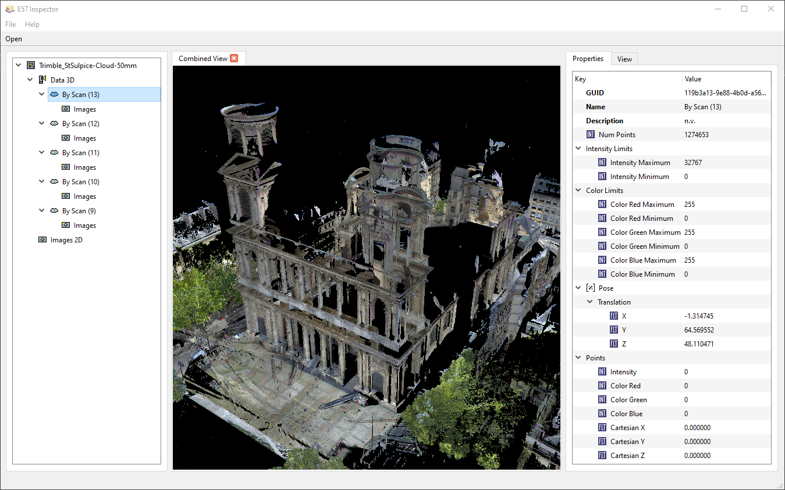
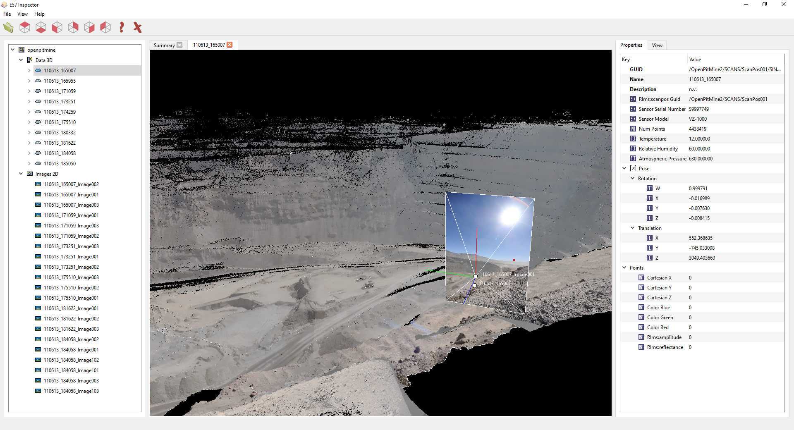
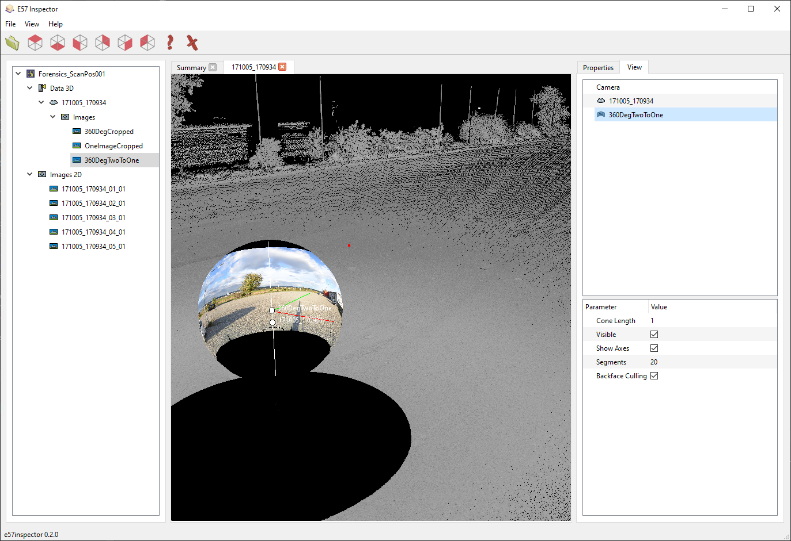

E57 Inspector is a cross-platform E57 file viewer. An E57 file is a vendor-neutral format for storing point clouds, images and metadata. It is documented in the ASTM E2807 standard.
The application can visualize the attributes and fields defined in the file, as well as view the contained point clouds and images. The program is open-source under the GPLv3 license.
Features
- Explore contents in a tree.
- Inspect all meta-data and fields of the stored objects.
- View the point cloud in 3D.
- View images in 2D and 3D (view-cone and position).
- View spherical images in 2D and 3D.
- Supports cartesian and spherical point coordinates.

Inspect contents and attributes
Open the e57 file and view point clouds and images in a tree view. Clicking on the objects reveals their attributes (such as point count, image width, ...) on the right side.

View pinhole images in 3d and 2d
Double clicking the pinhole images opens them in a regular image viewer. Dropping them into an existing 3d view renders the image in 3d with a view cone.

Panorama images
Double clicking the panorama images opens them in a regular image viewer. Right click and select "Open in 3d view" opens them in a panorama viewer. Dropping them into an existing 3d view renders the spherical image as a sphere with texture.
License
The project is licensed under the GNU GPLv3. It uses the Qt Framework for the user interface and libE57 for reading and parsing E57 files.